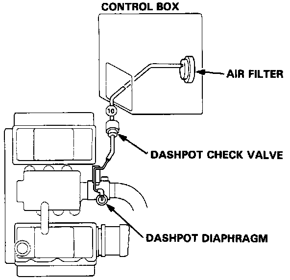
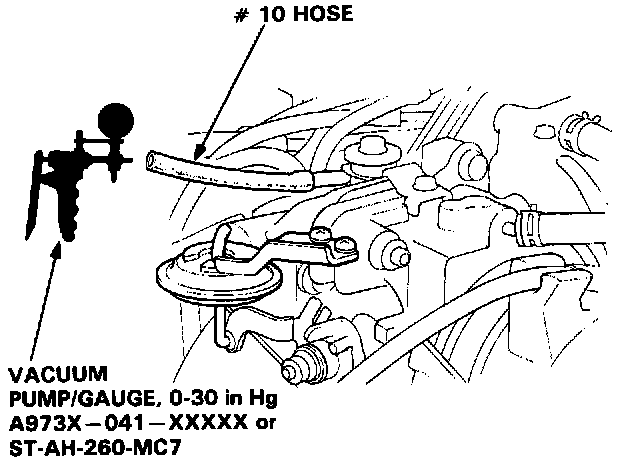
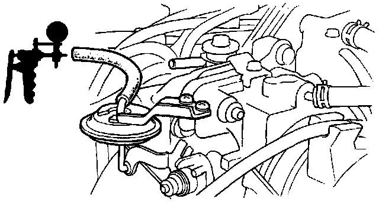

Dashpot: Testing and Inspection
Test
1. Check the vacuum line for leaks, blockage or a disconnected hose.

2. Disconnect # 10 vacuum hose from the dashpot diaphragm, and connect a vacuum pump to the hose.
3. Apply vacuum and check the speed the vacuum goes out.
Vacuum should go out slowly.
- If the vacuum holds or goes out quickly, replace the dashpot check valve and retest.

4. Connect a vacuum pump to the dashpot diaphragm.
5. Apply vacuum and check that the rod pulls in and vacuum holds.
- If the vacuum does not hold or the rod does not move, replace the dashpot diaphragm and retest.